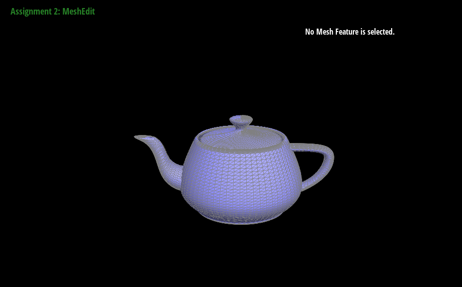

Give a high-level overview of what you implemented in this homework. Think
about what you've built as a whole. Share your thoughts on what
interesting things you've learned from completing the homework.
Section I: Bezier Curves and Surfaces
Part 1: Bezier curves with 1D de Casteljau subdivision
de Casteljau's Algorithm is basically linearly interpolating between every
point in the control points, then repeating over and over until you have
one point. For example if you have 4 points you lerp three points from
1->2, 2->3, and 3->4. Then you get 2 points from those 3, then you get 1
from those 2.
Step 1
Step 2
Step 3
Step 4
Step 5
Full Curve
Different Control Points + t value
Part 2: Bezier surfaces with separable 1D de Casteljau
The de Casteljau algorithm pretty much extends to Bezier surfaces by just
applying it twice. Following the algorithm from lecture, we're pretty much
just evaluating along the rows first, and then from these points
evaluating it along the columns which creates the surface. This is pretty
simple to implement as for each row at a parameter u we essentailly create
the point that would be on the bezier curve for those control points. Then
for each of these points we evaluate the curve along the columns at
another parameter v. The result is a point on the surface. The algorithm
for evaluating a point on the curve is pretty much just copied from the
last part, the only part we had to add was instead of just doing a single
step, going from all the control points to one point. I implemented this
by basically doing a while loop that as long as the output of the step
wasn't length 1 (length 1 meaning the algorithm was finished), we kept
evaluating until it was.

Teapot
Section II: Triangle Meshes and Half-Edge Data Structure
Part 3: Area-weighted vertex normals
Basically I just followed the formulas from lecture and implemented it. To
iterate around the vertice, I used the half edge data structure and used
next one time, got the vertex to get one point of the triangle, used next
again, got the vertex to get the other point, then finally used twin to
"start again" on the next triangle. To summarize, I basically used
halfedge to traverse the whole face. With these three points (since the
original vertice is the third point) I could calculate two vectors and
then take the cross to get an area weighted normal. I did this for each
face, iterating over each half edge until stopping at my original half
edge associated with the vertice.Finally I added up all of these from each
face and then normalized it.
Not Area Weighted
Area Weighted
Part 4: Edge flip
I basically followed the guide in the problem to implement the edge flip.
Some interesting things I noticed when implementing that I didn't think
about before was reassigning face halfedges. In the below example, if the
left face was associated with the halfedge on edge ab, then the output
would be wrong. I fixed this by always assigning the face halfedges to the
flipped edge halfedge. Also vertexes might be assigned the wrong halfedge.
For example if the vertex C was assigned to the halfedge on the flipped
edge, it would no longer be correct so I had to account for that when
reassigning too. Besides that I just followed the steps and basically
reassigned every halfedge with the corresponding next, twin, edge, vertex,
and face in the new diagram. For implementation I just assigned every
halfedge, vertex, face to a corresponding name when I was drawing the new
diagram so it made it easier to understand which thing pointed to what.
Before Flipping
After Flipping
One interesting bug I ran into showed this one above. I'm not sure exactly
why it rendered like this with so many edges but I found the root cause of
the bug to be because I accidentally assigned halfedges wrong through a
typo i.e. I assigned he1 and he4 in my code to the same halfedge when they
should be different ones. After I found that bug everything worked fine!
Part 5: Edge split
This was honestly pretty similar to the previous part. I fortunately did
not run into any errors so didn't have to debug. Similar to the last part,
I just drew a second diagram and made sure to label every part that was
new. This included 3 new edges, two new faces, 6 new halfedges, and 1 new
vertice. I then just essentially followed same idea of last part again,
assigning all the halfedges to their corresponding parts, and making sure
to assign the new mesh pieces to their associated parts too. Didn't really
run into any issues or anything new.
I chose the simpler dae because I think it's easier to tell the splits and
flips!
Before
Splits
Before
Splits and Flips
Part 6: Loop subdivision for mesh upsampling
I basically just followed the guide in the problem to implement the loop
subdivision. The first thing I did was loop through all the original
vertices and calculate a new position. To find all the connected vertices,
I did something similar to the connected edges part but just went one step
further and recovered the vertice that's connected to that edge (that
isn't the middle). Then I just followed the formula to calculate a new
position. I did pretty much similar thing for new vertices. For the edge
splitting, I needed to mark which vertices / edges were new so I just
added the code to the split function since I was already creating them
there which made it pretty easy. One thing I noticed when splitting was
that sometimes splitting an edge would cause the other edges to be split
since it was splitting both sides. I accounted for this by making sure
only old edges were split. Finally I just flipped based on the rule of old
vertice to new vertice. One bug I ran into was I didn't account for the
idea that even if one end of an edge was new and the other was old,
sometimes the edge shouldn't be flipped if it was old. This caused some
wacky looking bug like the one below. Finally I just iterated through all
the vertices and assigned them to the new positions. I would say the only
interesting implementation trick I did was adding the isNew to the
splitEdge function.
Sharp edges / vertices are "rounded out" and pulled towards the center because they're
pulled towards their neighbors. In the pictures below the sharp edges become rounded out.
Some ways to preprocess it might be to split triangles into smaller triangles everywhere which
make the effect of loop subdivision more subtle because vertices are pulled less because edges are closer.
Before
After
The weird assymetricalness is because initially the cube is assymetrical
around each faces center. Since loop subdivision pulls all the vertices
towards its neighbors, when some edges are longer than others, it pulls
more towards them. Especially in the corners of the cube that only have
valence three, it pulls weirdly. I fixed this by splitting the edges so
that its four triangles around each face so each vertice is pulled more
symmetrically towards the center.